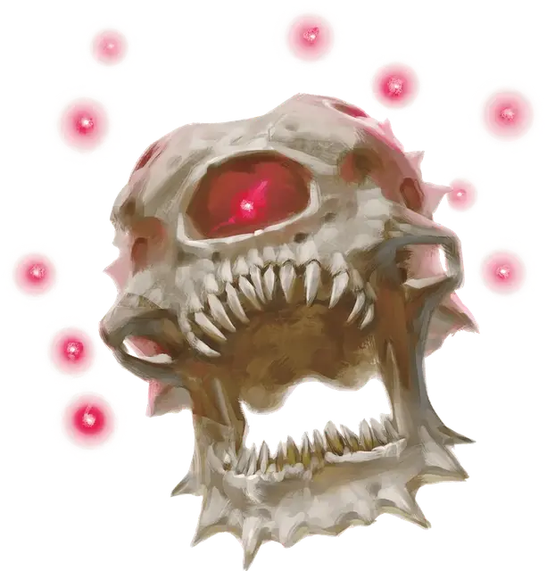

Тиран смерти
Death Tyrant
Большая Нежить, законно-злая

Класс Доспеха 19 (природный доспех)
Хиты 187 (25к10 + 50)
Скорость 0 футов, летая 20 футов (парит)
| мод | спас | ||
|---|---|---|---|
| СИЛ | 10 | +0 | +5 |
| ЛОВ | 14 | +2 | +2 |
| ТЕЛ | 14 | +2 | +7 |
| мод | спас | ||
|---|---|---|---|
| ИНТ | 19 | +4 | +9 |
| МДР | 15 | +2 | +7 |
| ХАР | 19 | +4 | +9 |
Навыки Восприятие +12
Иммунитет к урону яд
Иммунитет к состояниям сбивание с ног, паралич, очарование, окаменение, истощение, отравление
Чувства тёмное зрение 120 футов, пассивное Восприятие 22
Языки Глубинная речь, Подземный
Опасность 14 (11500 опыта)
Бонус мастерства +5
Среда обитания Подземье
Особенности
Конус отрицательной энергии. Центральный глаз тирана смерти испускает 150-футовым конусом невидимую магическую отрицательную энергию. В начале каждого своего хода тиран решает, в какую сторону направлен конус, и будет ли он активен.
Все существа в этой области не могут восстанавливать хиты. Все гуманоиды, умирающие в ней, становятся зомби под командованием тирана. Мертвый гуманоид сохраняет свое место в порядке инициативы и оживает в начале своего следующего хода, при условии, что его тело не уничтожено полностью.
Действия
Укус. Рукопашная атака оружием: +5 к попаданию, досягаемость 5 футов, одна цель. Попадание: Колющий урон 14 (4к6).
Лучи из глаз. Тиран смерти испускает три магических луча из глаз, выбранных случайным образом (перебрасывая повторяющиеся результаты), выбирая от одной до трех целей, видимых в пределах 120 футов:
• Очаровывающий луч. Целевое существо должно преуспеть в спасброске Мудрости Сл 17, иначе станет очарованным тираном на 1 час, или пока бехолдер не причинит ему вред.
• Парализующий луч. Целевое существо должно преуспеть в спасброске Телосложения Сл 17, иначе станет парализованным на 1 минуту. Цель может повторять этот спасбросок в конце каждого своего хода, оканчивая эффект на себе при успехе.
• Луч страха. Целевое существо должно преуспеть в спасброске Мудрости Сл 17, иначе станет испуганным на 1 минуту. Цель может повторять этот спасбросок в конце каждого своего хода, оканчивая эффект на себе при успехе.
• Замедляющий луч. Целевое существо должно преуспеть в спасброске Ловкости Сл 17. При провале скорость цели на 1 минуту уменьшается вдвое. Кроме того, существо не может совершать реакции, и может в свой ход совершать либо действие, либо бонусное действие, но не то и другое. Существо может повторять этот спасбросок в конце каждого своего хода, оканчивая эффект на себе при успехе.
• Луч бессилия. Целевое существо должно совершить спасбросок Телосложения Сл 17, получая урон некротической энергией 36 (8к8) при провале, или половину этого урона при успехе.
• Телекинетический луч. Если цель — существо, она должна преуспеть в спасброске Силы со 17 , иначе тиран переместит её на расстояние до 30 футов в любом направлении. Цель опутана телекинетической хваткой луча до начала следующего хода тирана, либо пока тиран не станет недееспособным. Если цель — предмет, весящий не больше 300 фунтов, никем не несомый и не носимый, он перемещается в любом направлении на расстояние до 30 футов. Тиран может этим лучом совершать аккуратные действия, например, манипулировать простым инструментом, открывать дверь или контейнеры.
• Усыпляющий луч. Целевое существо должно преуспеть в спасброске Мудрости Сл 17, иначе уснет и в течение 1 минуты будет лишено сознания. Цель просыпается, если получает урон или другое существо действием разбудит его. Этот луч не оказывает никакого эффекта на конструктов и нежить.
• Луч окаменения. Целевое существо должно совершить спасбросок Ловкости Сл 17. При провале существо начинает превращаться в камень и становится опутанным. В конце своего следующего хода оно должно повторить этот спасбросок. При успехе эффект оканчивается. При провале существо становится окаменевшим, пока не будет использовано заклинание высшее восстановление или подобная магия.
• Луч расщепления. Если цель — существо, она должна преуспеть в спасброске Ловкости Сл 17, иначе получит урон силовым полем 45 (10к8). Если этот урон снижает хиты существа до 0, его тело становится кучкой серой пыли. Если цель — немагический предмет или творение магической силы с размером не больше Большого, она расщепляется без спасброска. Если цель — немагический предмет или творение магической силы с размером Огромный или больше, этот луч расщепляет объём куба с длиной ребра 10 футов
• Луч смерти. Целевое существо должно преуспеть в спасброске Ловкости Сл 17, иначе получит урон некротической энергией 55 (10к10). Цель умирает, если луч уменьшает её хиты до 0.
Легендарные действия
Тиран смерти может совершить 3 легендарных действия, используя описанный ниже Луч из глаз. За один раз можно использовать только одно легендарное действие, и только в конце хода другого существа. Тиран восстанавливает использованные легендарные действия в начале своего хода.
Луч из глаз. Тиран смерти использует один случайным образом выбранный луч из глаз.
Логово
Логово тирана смерти обычно похоже на логово бехолдера, но содержит больше смертоносных ловушек и более запущено. У тирана смерти, обнаруженного в логове, показатель опасности 15 (13000 опыта).
Действия логова
При сражении в своем логове, тиран смерти может воззвать к окружающей магии и использовать действие логова. При значении инициативы «20» (в случае ничьей проигрывает всем конкурентам) тиран смерти может совершить действие логова, чтобы вызвать один из следующих эффектов:
• Квадратная площадь 50 × 50 футов, находящаяся в пределах 120 футов от тирана, наполняется призрачными глазами и щупальцами. Для всех существ кроме тирана смерти эта местность слабо заслонена и является труднопроходимой, до значения инициативы 20 в следующем раунде.
• Стены обрастают призрачными придатками до значения инициативы 20 через два раунда. Все существа, включая тех, что находятся на Эфирном Плане, враждебные тирану и начинающих свой ход в пределах 10 футов от стены, должны преуспеть в спасброске Ловкости Сл 17, иначе станут схваченными. Для высвобождения необходима успешная проверка Силы (Атлетика) или Ловкости (Акробатика) Сл 17.
• В воздухе в пределах 50 футов от тирана открывается призрачный глаз, испускающий случайным образом выбранный луч из глаз этого тирана в цель на выбор тирана. Призрачный глаз считается эфирным источником. После этого глаз закрывается и исчезает.
Тиран смерти не может повторять эффект пока все эффекты не будут использованы, и он не может использовать один эффект два раунда подряд.
Местные эффекты
Местность, в которой находится логово тирана смерти, искажается сверхъестественной природой существа. Обычно это один или несколько из следующих эффектов:
• Существа в пределах 1 мили от логова тирана смерти иногда ощущают, что за ними наблюдают, хотя рядом никого нет.
• Когда существо, враждебное тирану, и знающее о его существовании, заканчивает продолжительный отдых в пределах 1 мили от логова тирана, бросьте к20 для этого существа. При результате «10» или меньше существо подвергается атаке одного случайным образом выбранного луча из глаза тирана.
Если тиран смерти умирает, эти эффекты пропадают в течение 1к10 дней.
Описание
«СКОПЛЕНИЕ КРОШЕЧНЫХ ОГОНЬКОВ СПУСТИЛОСЬ ИЗ ТЕМНОЙ РАСЩЕЛИНЫ НА ПОЛОТКЕ. ЭТО ИСКРЫ СВОИМ СВЕЧЕНИЕМ ОСВЕТИЛИ БОЛЬШОЙ ЧУЖЕРОДНЫЙ ЧЕРЕП, ВИСЯЩИЙ ПОД НИМИ»
— ИЗ ДНЕВНИКОВ ДЖАСТУСА ХОЛЛОУКВИЛА, ИССЛЕДОВАТЕЛЯ ПОДГОРЬЯ
Иногда разум спящего бехолдера забредает дальше обычного безумия, воображая себе реальность, в которой он существует после смерти. Когда такие сны завладевают бехолдером, он может трансформироваться, скинув плоть, и став тираном смерти. Он хитер и управляет той же магией, которой владел при жизни, но теперь он подпитывается силой нежити.
Тиран смерти выглядит как массивный голый череп с точечкой красного света, сверкающей в пустой глазнице. Его глаза на отростках сгнили, и десять призрачных глаз теперь парят над ним, свирепо смотря во всех направлениях.
Смертоносный деспот. Как и при существовании в виде бехолдеров, тираны смерти распространяют свою власть на других существ. Кроме того, способность бехолдера отменять магию взглядом центрального глаза, сменяется на более зловещую силу тирана смерти, который теперь может превращать бывших рабов или врагов в нежить.
Зомби, созданные тираном смерти, используют и выбрасываются им по мере необходимости. Они охраняют вход в логово тирана смерти или его сокровищницу. Они служат приманкой в ловушках, а в бою выступают в роли расходного материала. Зомби отвлекают сильных врагов и дают время тирану смерти занять положение и подготовиться к уничтожению врага.
Армия мёртвых. Тиран смерти, ставший нежитью, становиться машиной уничтожения. Движимый жаждой власти и безопасности, он приближается к человеческим поселениями, уничтожая своими лучами все живое, попавшееся ему на пути, а затем создает себе армию нежити. Если его не остановить, тиран смерти может за неделю уничтожить население большого города, а затем он устремит свой мёртвый взгляд на дальнейшие завоевания. Любое уничтоженное поселение пополняет армию зомби тирана смерти.
Природа нежити. Тиран смерти не нуждается в воздухе, еде, питье и сне.